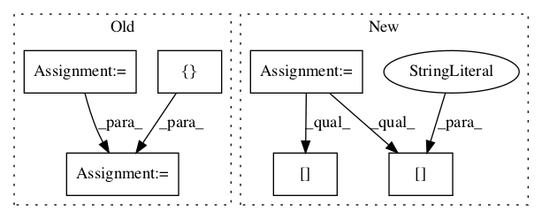

b32a4724dd2f8c97ff3b3813e5622d6bb6fb8f7a,dual_net.py,DualNetwork,run_many,#DualNetwork#Any#Any#,231

Before Change
return probabilities[0], value[0]
def run_many(self, positions, use_random_symmetry=True):
fts = functools.partial(features.extract_features, features=features.NEW_FEATURES)
processed = list(map(fts, positions))
if use_random_symmetry:
syms_used, processed = features.randomize_symmetries_feat(processed)
probabilities, value = self.session.run(
[self.policy_output, self.value_output],
feed_dict={self.x: processed,
self.train_mode: False})
if use_random_symmetry:
probabilities = features.invert_symmetries_pi(syms_used, probabilities)
return probabilities, value
After Change
processed = list(map(features.extract_features, positions))
if use_random_symmetry:
syms_used, processed = symmetries.randomize_symmetries_feat(processed)
outputs = self.sess.run(self.inference_output,
feed_dict={self.inference_input["pos_tensor"]: processed})
probabilities, value = outputs["policy_output"], outputs["value_output"]
if use_random_symmetry:
probabilities = symmetries.invert_symmetries_pi(syms_used, probabilities)
return probabilities, value
In pattern: SUPERPATTERN
Frequency: 3
Non-data size: 6
Instances
Project Name: tensorflow/minigo
Commit Name: b32a4724dd2f8c97ff3b3813e5622d6bb6fb8f7a
Time:
Author: null
File Name: dual_net.py
Class Name: DualNetwork
Method Name: run_many
Project Name: NifTK/NiftyNet
Commit Name: e03c289c293d520e52974538facf06c34d9d3587
Time:
Author: null
File Name: niftynet/network/dense_vnet.py
Class Name: DenseFeatureStackBlock
Method Name: layer_op
Project Name: NifTK/NiftyNet
Commit Name: 4421754f9886233e90563eb8088348bb36024095
Time:
Author: null
File Name: niftynet/layer/loss_segmentation.py
Class Name: LossFunction
Method Name: layer_op